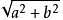

中文排版：typing.css
typing.css 是一个负责页面文字排版的 CSS 组件，通过对常用 HTML 文本标签进行样式重置以提供更为舒适的中文排版效果，并且致力于解决以下问题：
-
- 排版标签语义化
- 尽可能地减少 class 和 id 的使用，让页面代码结构清晰整洁。
-
- 重视中文排版效果
- 重置部分标签样式，使之符合中文排版需求。
-
- 响应式排版设计
- 不同分辨率采用不同的排版策略，通过对字体、行间距的调整，以优化不同设备的阅读体验。
如何使用
你可以在Github中下载到 typing.css。
于<head>中引入css后，在容器标签中添加class="typing"即可。
<head>
<link rel="stylesheet" type="text/css" href="./css/typing.css">
</head>
<body>
<article class="typing">
...
</article>
</body>排版效果
为了满足中文排版的需求，typing.css为inline boxes设置了合适的line-height，使之在显示中文时行间不会显得太过拥挤。以下两段排版实例来自叔本华Aphorismen zur Lebensweisheit的中英文翻译。
中文排版实例：
《人生的智慧》，韦启昌译（第23-24页）：
同样，耶稣说：“愚人的生活比死亡还要槽糕。”因此，我们可以发现：大致而言，一个人对与人交往的爱好程度，跟他的智力的平庸及思想的贫乏成正比。人们在这个世界上要么选择独处，要么选择庸俗，除此以外再没有更多别的选择了。
英文排版实例：
The Wisdom of Life, translated by Bailey Saunders (page 62)：
A very true saying, with which may be compared the words of Jesus, the son of Sirach, The life of a fool is worse than death. And, as a rule, it will be found that a man is sociable just in the degree in which he is intellectually poor and generally vulgar. For one's choice in this world does not go much strongeyond solitude on one side and vulgarity on the other.
标签列表
| 类型 | 标签 | 样式修改 |
|---|---|---|
| 全局 | .typing |
默认字体颜色:#1d2935，字号和行高响应分辨率。 |
| 标题 | <h1>~<h6> |
使样式符合语义，<h3>~<h6>设置统一字号。自动编号。 |
| 分割线 | <hr> |
修改默认颜色，设置外边距。 |
| 段落 | <p> |
默认无缩进，如需缩进可在其父级容器上添加class="typing-indent"。 |
| 列表 | <ul>|<ol>|<dl> |
修改无序和有序列表的列表符号，统一排版风格；增强定义列表联系。 |
| 表格 | <table> |
重置默认样式。表格外层容器添加class="typing-wrap"，可响应式支持。 |
| 代码块 | <pre> |
设置等宽字体。外层容器可添加class="typing-wrap"。 |
| 引用块 | <blockquote> |
修改样式。可包裹其他样式列表内的标签。 |
| 内容块 | <figure> |
添加外边距，可包裹其他样式列表内的标签。 |
| 参考 | <cite> |
可设置参考文献的引用列表，正体，小号字。 |
| 短引用 | <q> |
引用符号修改为直角引号。 |
| 链接 | <a> |
使用border-bottom显示下划线，修改默认颜色，:hover颜色继承父级。 |
| 代码 | <code> |
继承全局字体，颜色设置为:rgba(90, 9, 9, 0.8)。 |
| 着重 | <em> |
正体，强调语气。在Webkit内核中添加着重号，IE浏览器内渲染为粗体。 |
| 强调 | <strong> |
正体、粗体，强调程度最高。 |
| 删除 | <del> |
默认删除线样式。 |
| 缩写 | <abbr> |
修改鼠标手势为help，设置底部虚线。 |
| 上下标 | <sup>|<sub> |
固定字号为12px，行高为1。 |
| 斜体 | <i> |
保持英文斜体习惯。 |
| 辅助字 | <small> |
辅助文本，降低了字号和颜色的权重。 |
| 数据 | <data> |
对于open type字体使用frac样式集。 |
| 图片 | <img> |
设置两种行内图片和块图片两种效果，具体见详解部分。 |
文字样式
<q>
短引用
<del> 删除- 上标<sup> —— 下标<sub>
<code> 代码- <i>Italic英文斜体
- <em> 着重（webkit 内核显示着重号，IE 显示粗体）
- <strong> 强调
- Normal text<small>小号辅助文本
- <datd> frac 样式集 1/2
- <a> 链接
样式详解
font 与版面
typing.css 会根据媒体查询自动调整合适的 font 属性和版面边距。
| 分辨率 (px) | < 544 | 545 - 768 | 769 - 992 | 993 - 1380 | 1381 < |
|---|---|---|---|---|---|
| 正文字号 | 14 px | 14 px | 15 px | 16 px | 17 px |
| 行间距 | 1.6 | 1.68 | 1.8 | 1.82 | 1.86 |
| 段落间距 | 1.2 | 1.4 | 1.6 | 1.6 | 1.6 |
| 对齐方式 | 左对齐 | 左对齐 | 两端对齐 | 两端对齐 | 两端对齐 |
# 由于耦合的原因，移除了.typing的页面边距。如果需要这个 DOME 的边距效果可以根据表格中的参数自行设定。
页面结构
HTML5 注重语义结构，这样不仅能够提高可读性，并且有利于搜索引擎的优化。推荐使用以下的结构进行组织代码。
...
<article class="typing">
<header>
<h1>题目</h1>
</header>
<main>
<h2>标题 1</h2>
<p>...</p>
<h3>标题 1.1</h3>
<p>....</p>
<h3>标题 1.2</h3>
<p>....</p>
...
</main>
<footer>
<cite>...</cite>
</footer>
</article>
...内容块
使用<figure>标签，可以对图片、表格、代码块等结构进行包裹，形成内容块，还可以使用<figcaption>标签为内容块添加一个标题，或者<small>标签来添加注释。
<figure>的结构示例<figure>
<figcaption>结构示例</figcaption>
<pre>
<code>
...
</code>
</pre>
<small>*注释部分</small>
</figure>图片
在图片的排版处理上，会有两种不同的情况。一是使用行内图片来显示不能被支持的字型，如数学符号或者偏僻字。二是引用一张独立的展示图片。因此，可以直接使用<img>标签创建行内图片，或者使用<figure>标签包裹<img>，来显示大图片。
行内的图片：数学公式：，图片尺寸毋太大，以免突破容器限制。
独立的照片
 图片来源自网络
图片来源自网络
浏览器支持
因资源限制，没有对所有浏览器进行测试。不过可以明确的是，对于IE浏览器只支持 9 及其以上的版本，其他浏览器的渲染效果还是一致的。如果发现 BUG 或者愿意提供帮助的，可以提issues或者发邮件。